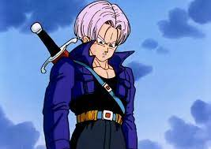

| Nome | Bio | Link na Wikipedia |
|---|---|---|
| Trunks  |
Trunks Briefs (トランクスブリーフ 'Torankusu Burīfu'?) é um personagem fictício do mangá e anime Dragon Ball criado por Akira Toriyama. Ele fez sua estréia no capítulo # 331 conhecido como O Jovem Misterioso (謎 の 少年 Nazo no Shōnen ??), publicado pela primeira vez na revista Weekly Shōnen Jump em 15 de julho de 1991.[1] Existem dois Trunks na série sendo que o primeiro que apareceu foi o Trunks do Futuro (未来のトランクス 'Mirai no Torankusu?'?), a versão adulta que viajou no tempo para avisar os Guerreiros Z sobre a ameaça de inimigos mortais. Essa versão também participa de Dragon Ball Super. A outra versão é o Kid Trunks, versão criança do presente e que participa de Dragon Ball GT. Ele apareceu pela primeira vez como um bebê no capítulo # 337, O Encontro dos Super Guerreiros (集 う 超戦 士た ち Tsudō Super Senshi-tachi ??), publicado em 26 de agosto de 1991. | Conheça mais |